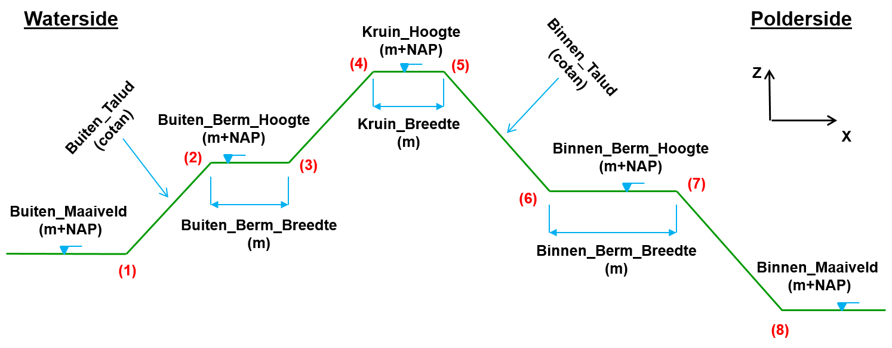
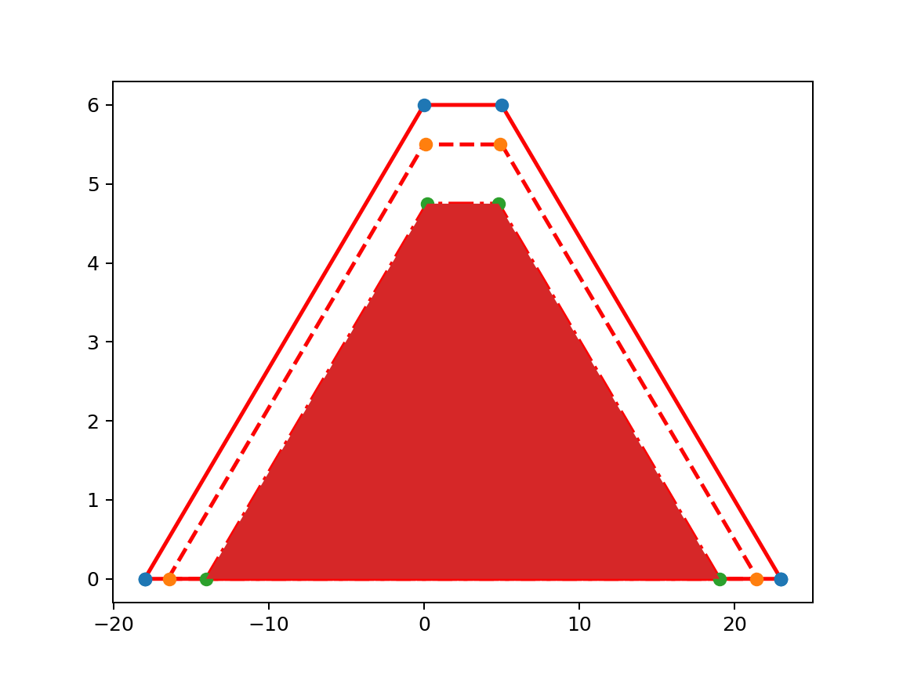
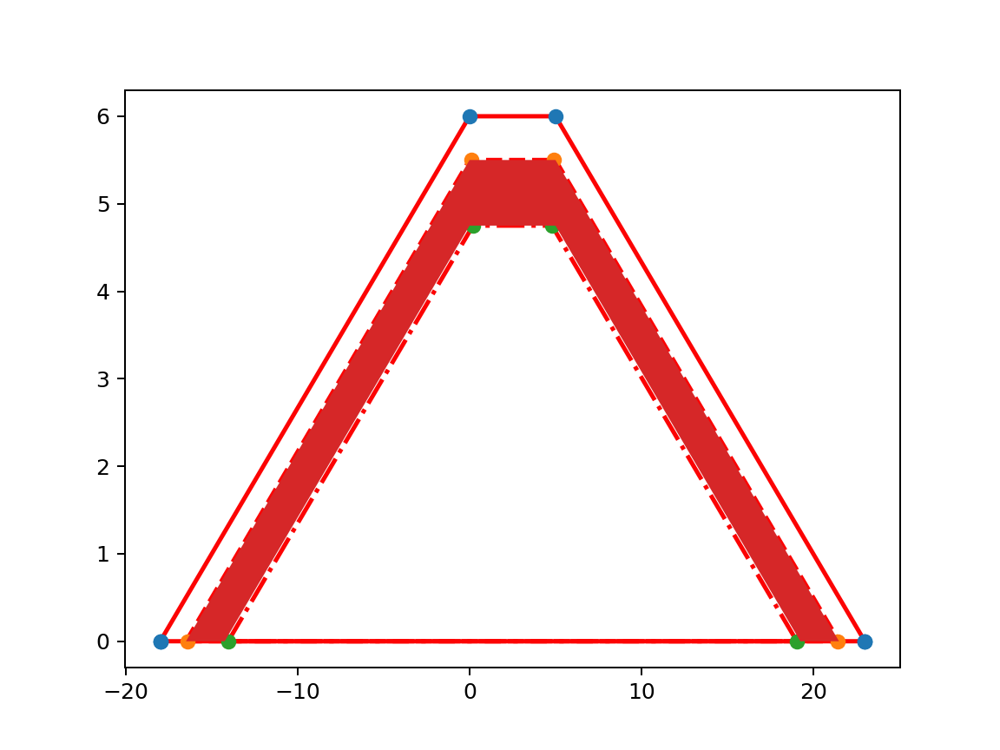
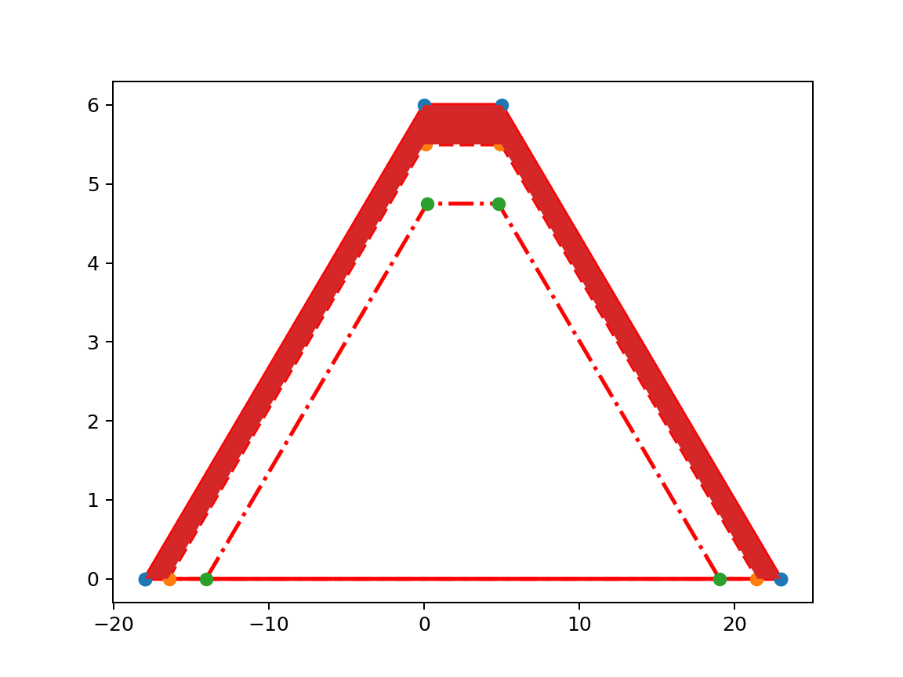

Dike profile¶
In this section we will describe how a Koswat dike is defined and what its parts are.
Koswat properties¶
A koswat dike is represented by an instance of a KoswatProfileProtocol. And its properties represent different aspects of a 'real domain'. With Image 1. Base profile properties as reference, we can see the mapping between said 'real domain' and the koswat properties:
input_data: The parts of a dike (written on the image reference), which are directly mapped as an implementation of theKoswatInputProfileProtocol.characteristic_points: 8 points given by the user describing the dike on (x,y) coordinates, the first four represent the waterside (buitendijks), the last four the polderside (binnendijks). Numbered in the reference picture from 1 to 8. Point 4 is considered to be the reference value (0) with respect to distances of e.g. surroundings and widths of certain parts of the dike.layers_wrapper: The description on how the layers of the dike are built. Further described in Dike layers.location: Geospatial coordinates (x, y) where the dike is situated.profile_width: The difference between the lowest and the highest 'x' coordinates of the profile characteristic points. The distance between characteristic points 1 and 8. This can be broken down into:waterside_width: The distance between characteristics points 1 and 4.polderside_width: The distance between characteristics points 4 and 8.
|  |
|---|
| Image 1. Base profile properties |
The geometry of a dike has certain additional characteristics:
- crest (kruin): The flat part on top of the dike.
- berm (berm): The flat part between either point 2 and 3 (waterside) or point 6 an 7 (polderside).
- slope (talud): The (steepness of the) diagonal parts between points 1 and 4 (waterside) or points 5 and 8 (polderside).
- ground level (maaiveld): The level of the area to the left of point 1 (waterside) or to the right of point 8 (polderside).
Dike layers¶
A dike is composed by three layers:
- Sand, the core layer.
- Clay, a coating layer.
- Grass, a (top) coating layer.
These layers are wrapped under a KoswatLayersWrapperProtocol instance. At the same time, each layer is an instance of a KoswatLayerProtocol containing the following properties:
material_type: Either Sand, Clay or Grass.upper_points: The surface points of the layer. This property can be used to calculate the surface (m2) of a material.outer_geometry: A polygon representing the material layer and the 'wrapped' polygons. For instance, the Clayouter_geometrywill also include the Sandmaterial_geometry.material_geometry: A closed polygon containing only the points representing the layer.
Using Image 3. Clay layer highlighted as an example, we can map the previous properties:
material_type: Clay, the 'in-between' layer.upper_points: Line with the 'orange' points, without 'closing' the polygon, something like: [(-18, 0), (0, 5.5), (8, 5.5), (21, 0)].outer_geometry: Closed geometry using theupper pointsand the 'ground level' (maaiveld) points: [(-18, 0), (0, 5.5), (8, 5.5), (21, 0), (-18, 0)].material_geometry: Closed geometry using theupper_pointsfrom Clay and theupper_pointsfrom the layer below (Sand, green points). Should be something like: [(-18, 0), (0, 5.5), (8, 5.5), (21, 0), (19, 0), (8, 4.75), (0, 4.75), (-14, 0), (-18, 0)]
|  |
|---|
| Image 2. Sand layer highlighted |
|  |
|---|
| Image 3. Clay layer highlighted |
|  |
|---|
| Image 4. Grass layer highlighted |